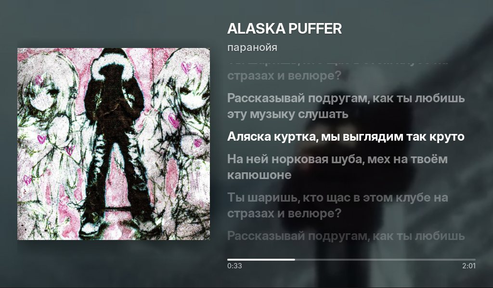
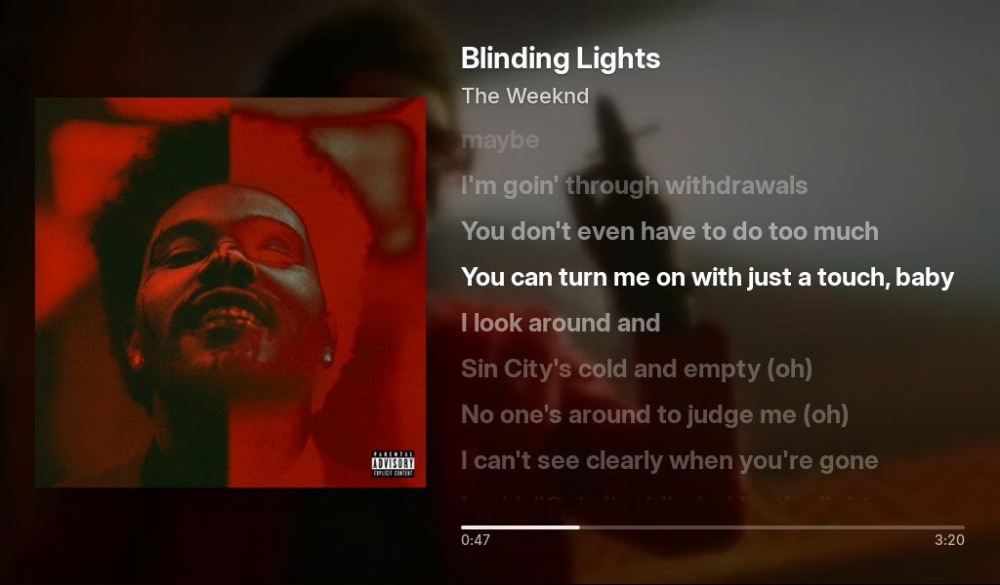
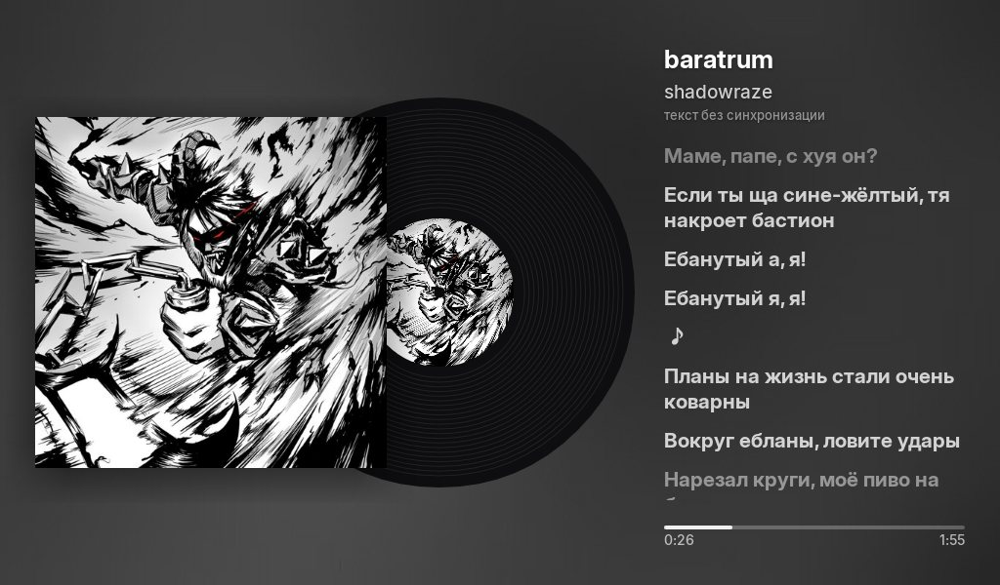
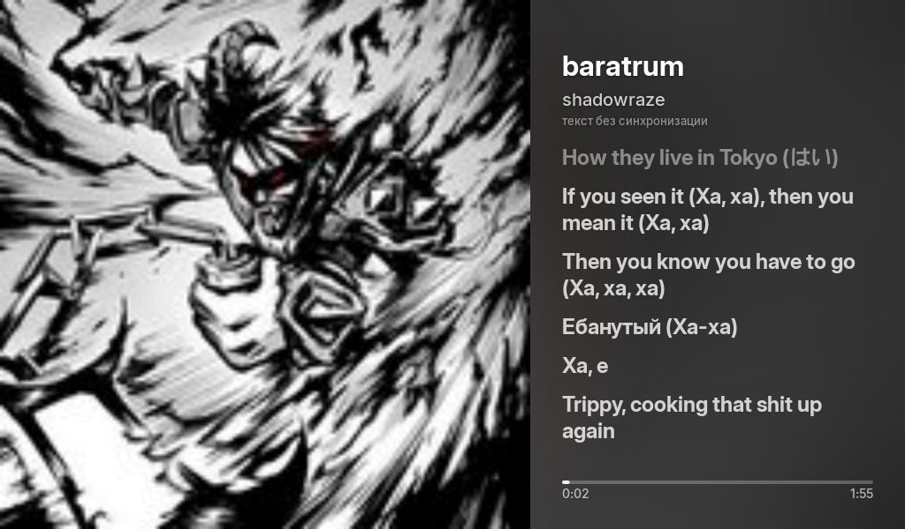
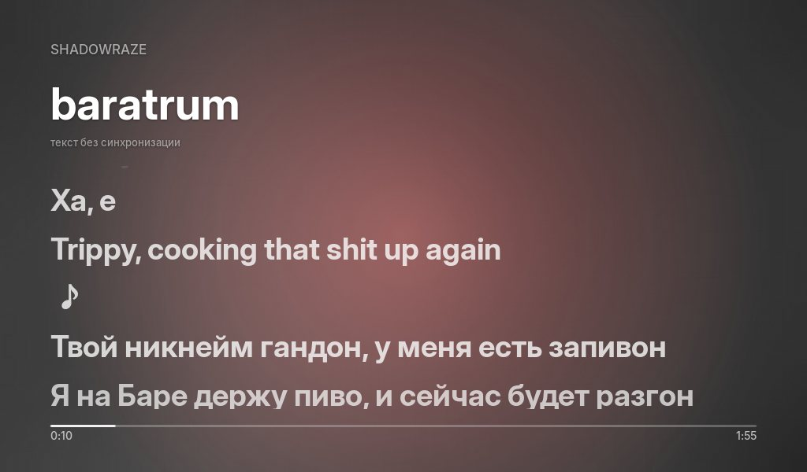
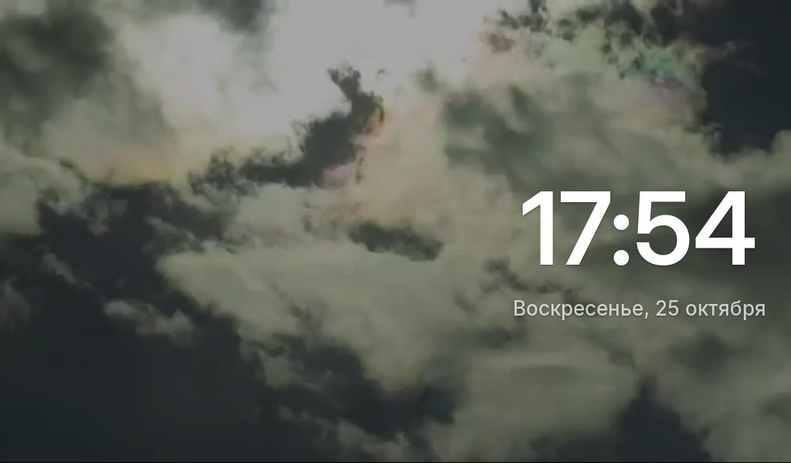
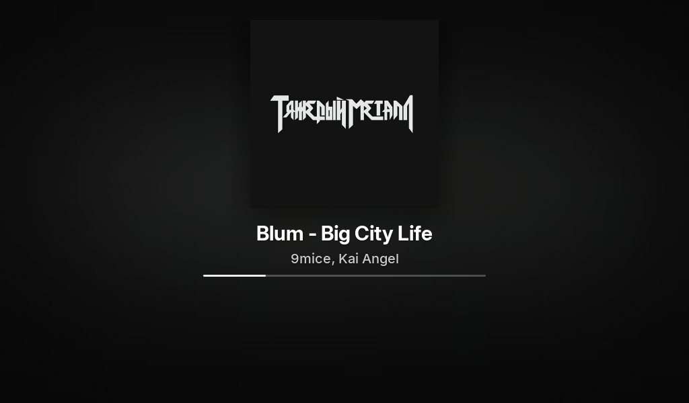

Он стоит рядом с компьютером и показывает, что сейчас играет: обложку, исполнителя и текст песни, который подсвечивается в такт.
Бесплатно и с открытым кодом.






Листай — строки загораются так же, как на экране планшета.
Выбираются в окне настроек на компьютере и сразу меняются на планшете. Фон — градиент, размытая обложка, видео или своё фото — подходит к любому виду.

Когда музыка на паузе, на экране часы, дата и погода. С 23 до 8 цифры становятся тёмно-красными — зайди ночью, увидишь.
Нужны Windows 10 или 11 и планшет или телефон на Android 4.1 и новее в той же сети Wi‑Fi.